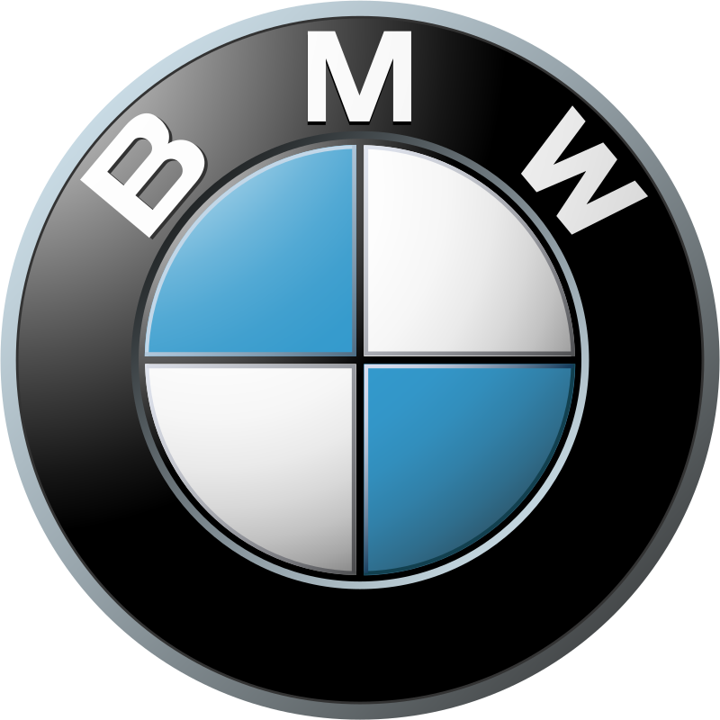

BMW AG je nemačka industrija automobila, motocikala i motora, sa sedištem u Minhenu, Nemačka.Kompanija je osnovana 1916. BMW takođe poseduje i proizvodi MINI brend i Rolls-Royce Motor Cars. BMW proizvodi motocikale BMW Motorrad i HUSKVARNA. BMW je poznat po svojim performansama i luksuznim vozilima.Kompanija je osnovana 1916. BMW takođe poseduje i proizvodi MINI brend i Rolls-Royce Motor Cars. BMW proizvodi motocikale BMW Motorrad i HUSKVARNA. BMW je poznat po svojim performansama i luksuznim vozilima. Moto kompanije je „The Ultimate Driving Machine“ na engleskom jeziku. BMW je nastao 1916. godine kada je Gustav Otto, sin izumitelja četverotaktnog motora sa unutrašnjim sagorevanjem, udružio svoju avio-kompaniju sa firmom RappMotorenwerke. Prvih godina novo-nastala kompanija se bavila sklapanjem V12 avionskih motora za potrebe Austro-Daimler-a, koji je kasnije postao Mercedes-Daimler.
Pripremili smo neke zanimljivosti o BMW-u koje vam možda nisu bile do sada poznate. Kada se govori o automobilima svetske klase, sigurno je da BMW u ovoj kategoriji ima počasno mesto. U pitanju je proizvođač nekih od najvoljenijih automobila tokom istorijskog razvoja grane proizvodnje automobila. Svakako je proizvođač koji uvek ponudi najbolje automobile tržištu i iz godine u godinu radi na inoviranju svog proizvodnog programa. U nastavku ćete moći da pročitate neke od zanimljivosti koje su vezane za poslovanje kompanije BMW, koje možda ranije nisu bile poznate široj javnosti.
U periodu Prvog svetskog rata kompanija BMW je osnovana. Nastala je spajanjem dve tadašnje kompanije. S obzirom da je u ratnim godinama postojala velika potreba za proizvodnjom motora, ova nova kompanija se bacila na posao. Smatra se da je BMW tada proizveo neke od najboljih motora u datim uslovima. I to motore za avione. Mnogi piloti koji su u to vreme vozili avione sa BMW motorima potvrdili su njihov kvalitet. Neki su išli čak do te mere da su govorili da su to najbolji motori koji su ikada proizvedeni. Zato sada kada startujete motor nekog BMW automobila razmislite o tome da su ranije verzije tih motora pokretale avione.
| Redni br. | Model | Godiste |
|---|---|---|
| 1. | M8 Gran Coupe | 2018/2019 |
| 2. | M5 | |
| 3. | M1 Coupe | 2011/2012 |
| 4. | BMW2002 | |
| 5. | 1996 |